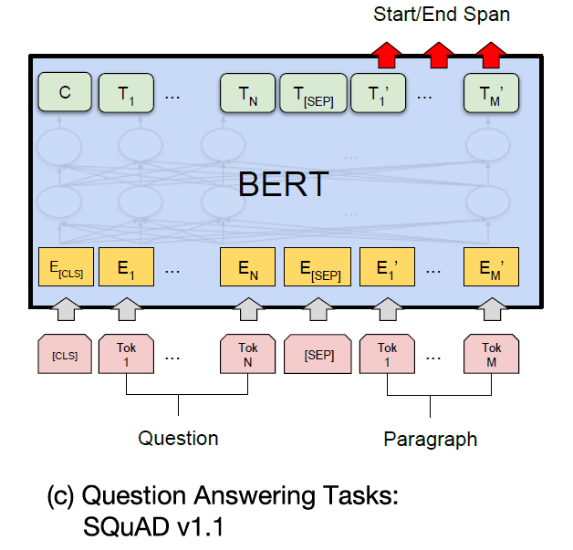

Resources
Home
How to contribute?
Resources
Local workshops
Forums
ML stories
Exploratory analysis
Pretrained models
Glossary of ML terms
Categories
All
(10)
Books
(1)
Carpentries
(4)
Classical ML
(1)
Code-along
(6)
Compute
(1)
Contribute
(1)
Deep learning
(4)
GPU
(1)
Git/GitHub
(1)
Guides
(2)
Hugging Face
(1)
Keras
(1)
Large language models
(1)
OOD detection
(1)
PyTorch
(2)
Python
(1)
Reproducibility
(1)
Sklearn
(1)
Text analysis
(1)
Transformers
(1)
Trustworthy ML
(1)
Udacity
(1)
Version control
(1)
Videos
(1)
Workshops
(5)
Resources
Order By
Default
Title
Date - Oldest
Date - Newest
Center for Highthroughput Computing (CHTC)
2 min
Established in 2006, the Center for High Throughput Computing (CHTC) is committed to democratizing access to powerful computing resources across all research domains. High…
How to Contribute?
6 min
We want Nexus to serve also as a place where members of the community can share their knowledge. This guide answers the question, how to contribute to a useful resource to…
Intro to Deep Learning with Keras (Carpentries)
3 min
The Intro to Deep Learning with Keras workshop from the Carpentries will walk you through introductory deep learning concepts as well as how to build a neural networks in…
Intro to Deep Learning with PyTorch (Udacity)
2 min
The Intro to Deep Learning with PyTorch workshop from Udacity will walk you through introductory deep learning concepts as well as how to build a neural networks in PyTorch.…
Intro to Machine Learning with Sklearn (Carpentries)
3 min
The Intro to Machine Learning with Sklearn workshop from the Carpentries will walk you through introductory machine learning concepts as well as how to implement common ML…
Intro to Python (Carpentries)
2 min
The Plotting and Programming in Python workshop provides an introduction to programming in Python 3 for people with little or no previous programming experience. It uses…

Intro to Text Analysis (Carpentries)
2 min
The Intro to Text Analysis workshop introduces the field of Natural Language Processing (NLP) and how to gain insights from collections of text data (i.e., a corpus). This…
Out-of-Distribution Detection
1 min
The below tutorial from Sharon Li, an Assistant Professor in the Department of Computer Sciences at the University of Wisconsin-Madison, introduces a pervasive problem faced…
Understanding Deep Learning
3 min
Nowadays, nearly anyone can implement a deep learning model in a just a few lines of code. What separates the novices from the experts, however, is the ability to understand…
Version Control with GitHub Desktop
17 min
Navigating the world of version control systems like Git can initially feel daunting, especially for those new to programming or collaborative software development projects.…
No matching items
How to contribute?
Local workshops